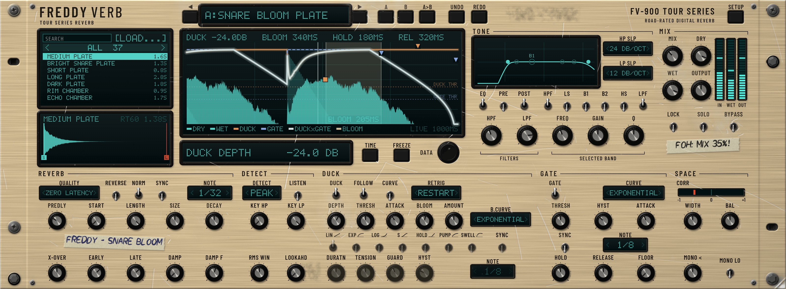

Milestone: M7 Champagne @2x · rendered 1 Nov 2026 12:20:57am by FreddyVerb_Snapshots. Click an image to open it full size.

Champagne-gold anodized panel with heavy road wear, gaffer residue, masking-tape notes, cyan VFD, chunky toggles.